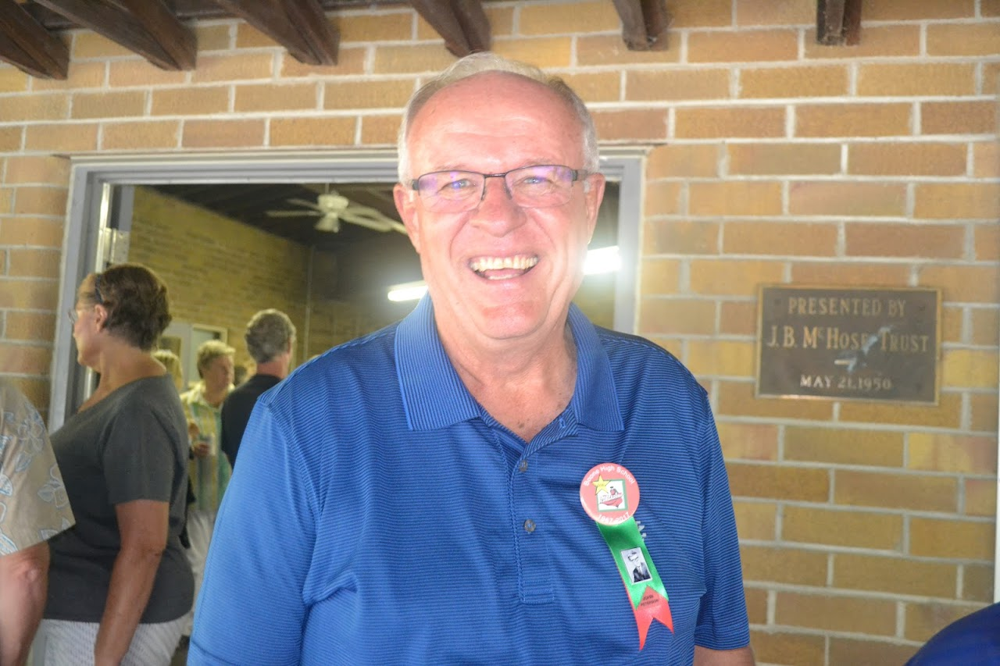
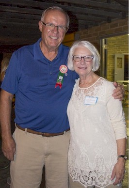
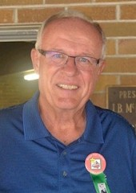

BHS 1967 Class Member
John Frederick Peterson
 1967 Click for Page Elementary Photo |
 2017 |
|  2017 - John & wife Carol "Needham" Peterson |
 2017 |
| 1967 Click for Page Elementary Photo |
 2017 |
|  2017 - John & wife Carol "Needham" Peterson |
 2017 |